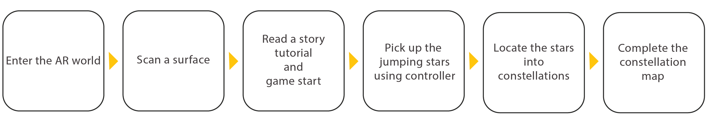
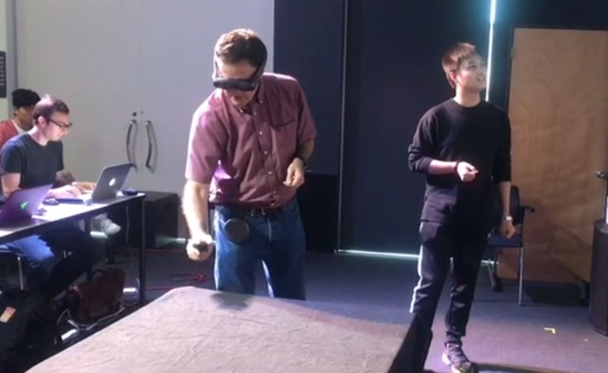

{% for image in page.images %}
 {% endfor %}
{% endfor %}
Back to the sky
Interaction Designer and 3D Arist
Design Overview ‘Back to the sky’ is an AR 3D puzzle game for Magic Leap. A guest controls the magic leap controller as a net to catch the jumping stars in order to save them from ‘Black hole’ and to locate them in the right position of the constellations. The goal of this game is to save the stars and complete the constellation map as much as possible. Easy to play! Experience wonderful night sky in AR world!
My Responsibilities
- Led the development process of story writing, concept design, level design
- Designed the interactions to accommodate the player's field of view in AR
- 3D modeling and texturing assets using Maya, photoshop, and substance painter
UX Challenges
- Small field of view in magic leap (The guest only can see small part of the world)
- Making everything fit naturally into the frame
- Designing a clear visual indicator and feedback
- Developing an intuitive interface with a controller
Interaction Flow
- Interaction with stars and constellation is confusing. It doesn’t quite communicate “come do this thing.”
- Visual indicator is not obvious.
- Because of the field of view, the guest can see only one part of the world, so it is hard to figure it out what happened in other part of world.
- Provided clear instruction at first to the guests.
- Changed the net 3D models to make it more apprent that the guest can use it to pick up the stars.
- After the guest picks up the star, the corresponding constellation slots are glowing to serve as a visual cue.
- Moved the base of the world to a higher level so that the guest can pick up the stars at eye level.

Usability Test
I ran a public play test with over 50 audiences and got feedback.

The Discovery
Fixing Pain Points